<meta charset="utf-8"><title>11/27昼のコラム note貼り付け</title>
<style>
/* one column of numbered paste steps; text steps vs image steps differ by marker */
:root{--bg:#F5F4F0;--card:#FFFFFF;--ink:#1D2321;--mute:#5F665F;--line:#DCDAD2;--btn:#1F5FBF;--btnok:#2E8B4F;--img:#E9F3EC;--imgink:#22663B;--sans:'IBM Plex Sans JP','Hiragino Sans','Noto Sans JP',sans-serif}
@media (prefers-color-scheme:dark){:root:not([data-theme="light"]){--bg:#171A19;--card:#202423;--ink:#ECEDE8;--mute:#A3AAA2;--line:#343937;--btn:#4D8BE6;--btnok:#3FA866;--img:#1E2C23;--imgink:#8FD3A6;color-scheme:dark}}
:root[data-theme="dark"]{--bg:#171A19;--card:#202423;--ink:#ECEDE8;--mute:#A3AAA2;--line:#343937;--btn:#4D8BE6;--btnok:#3FA866;--img:#1E2C23;--imgink:#8FD3A6;color-scheme:dark}
body{background:var(--bg);color:var(--ink);font-family:var(--sans);font-size:15px;line-height:1.75;padding:20px 16px 60px}
main{max-width:680px;margin:0 auto;display:grid;gap:28px}
header h1{font-size:22px;margin:0 0 6px;text-wrap:balance}
header p{margin:0;color:var(--mute);font-size:14px}
nav{display:flex;gap:8px;flex-wrap:wrap;margin-top:12px}
nav a{border:1px solid var(--line);border-radius:999px;padding:4px 14px;color:var(--ink);text-decoration:none;font-size:14px;background:var(--card)}
.part h2{font-size:18px;line-height:1.5;margin:0 0 12px;text-wrap:balance;display:flex;gap:10px;align-items:baseline;flex-wrap:wrap}
.tag{font-size:13px;background:var(--ink);color:var(--bg);border-radius:6px;padding:1px 9px}
.steps{list-style:none;margin:0;padding:0;display:grid;gap:12px}
.st{background:var(--card);border:1px solid var(--line);border-radius:12px;padding:12px;min-width:0}
.hd{display:flex;align-items:center;gap:8px;margin-bottom:8px}
.no{width:26px;height:26px;border-radius:50%;background:var(--btn);color:#fff;display:inline-flex;align-items:center;justify-content:center;font-size:13px;font-weight:700;flex:0 0 26px}
.im .no{background:var(--btnok)}
.hd em{font-style:normal;font-size:12px;background:var(--img);color:var(--imgink);border-radius:6px;padding:0 8px}
.bx{font-size:13.5px;line-height:1.7;border:1px solid var(--line);border-radius:8px;padding:8px 10px;max-height:110px;overflow:auto;overflow-wrap:anywhere}
.bx.tall{max-height:150px}.bx p{margin:0 0 6px}.bx h2{font-size:14px;margin:8px 0 4px}.bx a{color:var(--btn)}
.st img{display:block;width:100%;max-width:100%;border:1px solid var(--line);border-radius:8px}
.sub{font-size:12.5px;color:var(--mute);margin:6px 0 0}
.cp{width:100%;margin-top:8px;padding:12px;border:0;border-radius:10px;background:var(--btn);color:#fff;font:600 15px var(--sans);cursor:pointer}
.cp.ok{background:var(--btnok)}.cp.dl{background:var(--btnok)}.cp:focus-visible{outline:3px solid var(--ink);outline-offset:2px}
.xh{font-size:15px;margin:20px 0 10px}
.fb{font-size:13px;line-height:1.7;margin:8px 0 0;padding:8px 10px;border-radius:8px;background:var(--img);color:var(--imgink)}
.opts{display:grid;grid-template-columns:repeat(auto-fill,minmax(240px,1fr));gap:10px}
.opt{min-width:0}.opt img{display:block;width:100%;border:1px solid var(--line);border-radius:8px}
.ol{display:flex;align-items:center;gap:8px;margin-top:6px}.ol b{font-size:13px;flex:0 0 auto}.ol .on{font-size:12.5px;color:var(--mute);flex:1;min-width:0}.ol .cp{width:auto;flex:0 0 auto;padding:9px 14px}.ol .cp{margin:0;padding:9px}
.toast{font-size:13px;color:var(--mute);margin-top:6px}
</style>
<main><header><h1>11/27昼のコラム note貼り付け</h1><p>いま公開済みは7本です。青い番号は文章、緑は画像です。</p><nav><a href="#p1">1</a><a href="#p2">2</a><a href="#p3">3</a><a href="#p4">4</a><a href="#p5">5</a><a href="#p6">6</a><a href="#p7">7</a></nav></header><section class="part" id="p1"><h2><span class="tag">OFF GRID</span>ルクレール「契約にそんな条項はまったくない」　ナンバー1説を否定</h2><p class="sub">サイトに公開：11:56</p><ol class="steps">
<li class="st im"><div class="hd"><span class="no">1</span><b>見出し画像</b><em>画像</em></div>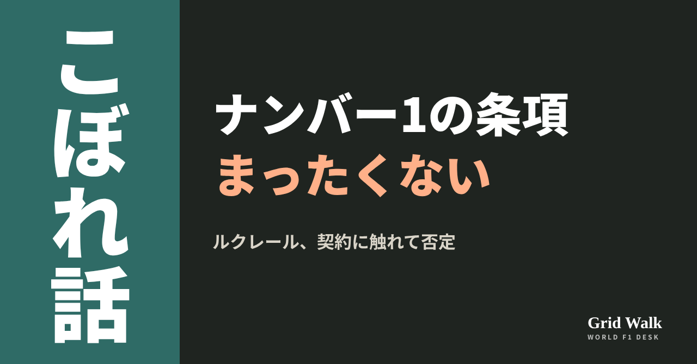<button class="cp dl" data-img="img/leclerc-no-number-one-clause-20261127.png" data-name="leclerc-no-number-one-clause-20261127_見出し画像.png">ダウンロード</button></li>
<li class="st"><div class="hd"><span class="no">2</span><b>タイトル</b></div><div class="bx" id="p1t">ルクレール「契約にそんな条項はまったくない」　ナンバー1説を否定</div><button class="cp" data-plain="p1t">タイトルをコピー</button></li>
<li class="st"><div class="hd"><span class="no">3</span><b>本文</b></div><div class="bx tall" id="p1r"><p>契約にナンバー1の扱いが書かれているのではないか。カタールGPの木曜会見（11月26日）で、フェラーリのシャルル・ルクレールはそう聞かれ、ふだんは話さない契約の中身に触れて否定しました。質問したのはイギリスのThe Raceのジョシュ・サティル記者。SNSでそうした声が出ている、という問いでした。</p><p>元の記事へのリンクと、ラスベガスの接触の経緯を書いたコラムはサイトで → <a href="https://f1gridwalk.github.io/lens/leclerc-no-number-one-clause-20261127/?utm_source=note&amp;utm_campaign=leclerc-no-number-one-clause-20261127">https://f1gridwalk.github.io/lens/leclerc-no-number-one-clause-20261127/?utm_source=note&amp;utm_campaign=leclerc-no-number-one-clause-20261127</a></p><blockquote><p>「ふだんは契約の中身を明かさないけど、これは話しておくべき大事なことだと思う」「契約にそんな条項はまったくない。興味を持ったことも、自分から望んだことも一度もない」「だから、答えはノーだ」（ルクレール、FIA会見の書き起こし）</p></blockquote><p>質問の後半は、うわさが広がるのをどう感じているか、というものでした。ルクレールはそこで、自分がいちばん嫌だと感じていることを話しました。</p><blockquote><p>「ひとつだけ見たくないのは、チームへの誠実さや、チームへの愛を疑われることだ」「僕は2019年からフェラーリにいる」「フェラーリをトップに戻すためなら、何だってやる」「それがいちばんこたえる」（同）</p></blockquote><p>ミスは起きるもので、とくにチームメイトどうしでは減らそうとしている、とも話しています。</p><h2>代表の言葉を受け止める</h2><p>F1公式の結果では、11月21日の第21戦ラスベガスGPで、ルクレールは接触を起こしたとして10秒加算。チームメイトのルイス・ハミルトンが7位、ルクレールは10位でした。経緯はコラム https://f1gridwalk.github.io/lens/ferrari-leclerc-hamilton-contact-20261122/ で。会見では、フレデリック・バスール代表がこの接触を受け入れられないと話したことへの反応も聞かれました。</p><blockquote><p>「フレッドは、メディアの前に僕と話したいと、もう無線で伝えてきていた」「だから、フレッドの立場はもちろん分かっていた。ドライバーとしては、それを受け止めるしかない。それだけだ」（同）</p></blockquote><p>ハミルトンとの争いについては、2人ともとても強いドライバーで、相手の前でゴールしたいと思っている、と話しました。</p><blockquote><p>「ここ最近、ああいうことが少し多すぎた。二度と起きないように、チームとして解決策を見つけないといけない」（同）</p></blockquote><h2>話せないこと</h2><p>ただ、どんな解決策なのかと聞かれると、中身は明かしませんでした。</p><blockquote><p>「どのみち、僕には許されていない。だから詳しくは話せない」（同）</p></blockquote><p>残り2戦で2人の争い方の決まりが変わるのかという問いにも、それは明かせないと答えています。</p><p>イギリスのRacingNews365（英語版）は、この発言を取り上げ、フェラーリがルクレールに処分について話すことを禁じた、という見出しで伝えました。チームの中の空気については、今すごく楽しい雰囲気でないのは確かだとしつつ、解決策を探そうという気持ちは強いと話しています。イタリアのAutoMoto.itのディレッタ・コロンボ記者に、将来ほかのチームで走ることは考えられるかと聞かれると、こう答えました。</p><blockquote><p>「数か月前に新しい契約にサインしたばかりだから、今のところ、もちろんない」（同）</p></blockquote><p>F1公式のカレンダーでは、残りは第22戦カタールGP（11月27〜29日）と、第23戦アブダビGP（12月4〜6日）の2戦です。</p><p>編集部としては、ふだん明かさない契約の中身に触れてまで否定し、いちばんこたえるのはチームへの思いを疑われることだと話した点に、今回の答えの重みがあると見ています。決まりの中身が語られない以上、残り2戦は、コースの上での2人の走りがその答えになりそうです。</p><p><strong>ナンバー1の条項はないと明言したルクレール。残り2戦、フェラーリは2人を自由に戦わせるべきだと思いますか？</strong></p><p>━━━━━━━━━━</p><p><strong>F1 Grid Walk では、世界のF1ニュースを毎日日本語でまとめています。</strong></p><p>海外の記事の要約を、毎日載せています。</p><p><a href="https://f1gridwalk.github.io/">https://f1gridwalk.github.io/</a></p><p>ほかの海外記事も読みたい方は、F1 Grid Walkへ。</p><p><a href="https://f1gridwalk.github.io/lens/leclerc-no-number-one-clause-20261127/">https://f1gridwalk.github.io/lens/leclerc-no-number-one-clause-20261127/</a></p><p>━━━━━━━━━━</p><p><a href="https://www.fia.com/news/f1-2026-qatar-grand-prix-thursday-press-conference-transcript">出典：FIA（国際）</a></p><p><a href="https://racingnews365.com/charles-leclerc-banned-by-ferrari-from-speaking-out-on-lewis-hamilton-clash-sanctions">出典：RacingNews365（イギリス）</a></p><p><a href="https://www.formula1.com/en/results/2026/races/1300/las-vegas/race-result">出典：F1公式サイト（イギリス）</a></p><p><a href="https://www.formula1.com/en/racing/2026">出典：F1公式サイト（イギリス）</a></p></div><button class="cp" data-rich="p1r">本文をコピー</button></li>
<li class="st"><div class="hd"><span class="no">4</span><b>ハッシュタグ</b></div><div class="bx" id="p1h">#F1 #F1jp #フェラーリ #ルクレール #ハミルトン #バスール #カタールGP #F1こぼれ話 #OFFGRID</div><button class="cp" data-plain="p1h">タグをコピー</button></li>
</ol><h3 class="xh">X</h3><ol class="steps">
<li class="st im"><div class="hd"><b>X用の画像</b><em>画像</em></div>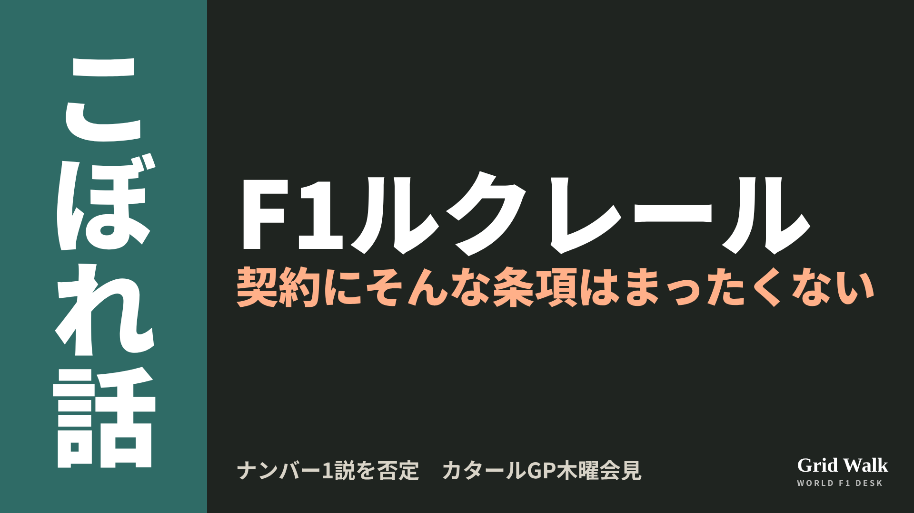<button class="cp dl" data-img="img/x_leclerc-no-number-one-clause-20261127.png" data-name="x_leclerc-no-number-one-clause-20261127.png">ダウンロード</button></li>
<li class="st"><div class="hd"><b>① noteをシェアするときの文</b></div><div class="bx" id="p1x0">カタールGPの木曜会見で、ルクレールが契約のナンバー1条項のうわさを否定。「契約にそんな条項はまったくない」。ハミルトンとの解決策の中身は明かしませんでした。noteにまとめました #F1jp #ルクレール #フェラーリ</div><button class="cp" data-plain="p1x0">コピー</button></li>
<li class="st"><div class="hd"><b>② ①への返信</b></div><div class="bx" id="p1x1">ほかの海外記事も読みたい方は、F1 Grid Walkへ。
https://f1gridwalk.github.io/lens/leclerc-no-number-one-clause-20261127/?utm_source=x&amp;utm_campaign=leclerc-no-number-one-clause-20261127</div><button class="cp" data-plain="p1x1">コピー</button></li>
<li class="st"><div class="hd"><b>③ ②への返信</b></div><div class="bx" id="p1x2">毎日の海外F1ニュースは、日本語でこちらにまとめています。
https://f1gridwalk.github.io/</div><button class="cp" data-plain="p1x2">コピー</button></li>
</ol></section><section class="part" id="p2"><h2><span class="tag">OFF GRID</span>ラッセル「リスクのダイヤルが少し高すぎる」　ベガスは自分のミス</h2><p class="sub">サイトに公開：11:54</p><ol class="steps">
<li class="st im"><div class="hd"><span class="no">1</span><b>見出し画像</b><em>画像</em></div>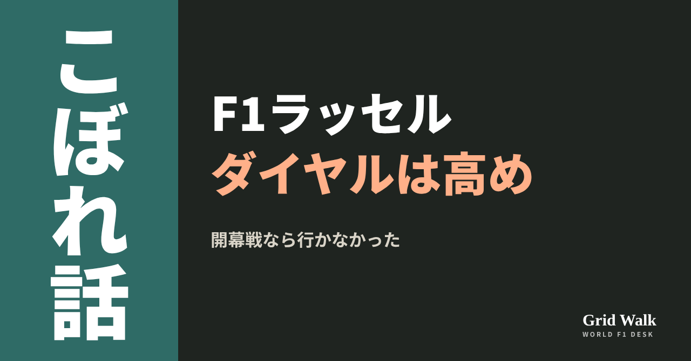<button class="cp dl" data-img="img/russell-risk-dial-20261127.png" data-name="russell-risk-dial-20261127_見出し画像.png">ダウンロード</button></li>
<li class="st"><div class="hd"><span class="no">2</span><b>タイトル</b></div><div class="bx" id="p2t">ラッセル「リスクのダイヤルが少し高すぎる」　ベガスは自分のミス</div><button class="cp" data-plain="p2t">タイトルをコピー</button></li>
<li class="st"><div class="hd"><span class="no">3</span><b>本文</b></div><div class="bx tall" id="p2r"><p>カタールGPを前にした11月26日の木曜会見で、メルセデスのジョージ・ラッセルは、ラスベガスGPの終盤の一手を自分のミスだと認めました。FIAが公開した会見の書き起こしによると、そのうえで、いまの自分をこう言い表しています。</p><p>会見の書き起こしへのリンクと、フェルスタッペンとの言い合いの経緯を追ったコラムへの案内はサイトで → <a href="https://f1gridwalk.github.io/lens/russell-risk-dial-20261127/?utm_source=note&amp;utm_campaign=russell-risk-dial-20261127">https://f1gridwalk.github.io/lens/russell-risk-dial-20261127/?utm_source=note&amp;utm_campaign=russell-risk-dial-20261127</a></p><blockquote><p>「本当のところ、いまはたぶん、リスクのダイヤルが少し高すぎるんだと思う。大きな結果を狙って、シーズンの終わりに向けて見せ場をいくつか残したいから」（ラッセル、カタールGP木曜会見、FIAの書き起こし）</p></blockquote><h2>開幕戦なら、行かなかった</h2><p>第21戦ラスベガスGPの決勝、全50周の48周目。ラッセルはチームメイトのアンドレア・キミ・アントネッリを抜こうとしてクラッシュし、F1公式の結果では9位、2点に終わりました。勝ったのはマックス・フェルスタッペン、アントネッリは4位です。残り2周での仕掛けについて、ラッセルはこう話しました。</p><blockquote><p>「これがシーズンの開幕戦だったら、残り2周であの動きを狙うことは絶対になかった。でも、シーズン残り2戦となると、行ってみたかったんだ」（ラッセル、FIAの書き起こし）</p></blockquote><p>ドイツのMotorsport-Magazin.comの記者に、チームの立場からもっと賢くやれなかったかと聞かれると、路面のこぶをレース中ずっとブレーキの目印にしていたと説明しました。</p><blockquote><p>「こぶを踏んでからブレーキをかけていた。でも、コーナーのイン側に入ったら、こぶがなかった」「後から言うのはいつも簡単だけど、あのアクシデントは全部、僕のせいだ」（ラッセル、FIAの書き起こし）</p></blockquote><p>仕掛けた理由は、最後の1周を前にして前に出ておくためでした。その周に行かなければ、2番手にいたキミが勝利を狙える立場になっていた、とラッセルは話しています。</p><h2>苛立ちではなく、勝ちたかった</h2><p>イタリアのAutoMoto.itの記者には、苛立ちから出た動きではないかと聞かれました。ラッセルはそれを否定しています。</p><blockquote><p>「何かに苛立っていたわけじゃない。勝ちを狙うために、もっとリスクを取るつもりだった、それだけだ」「慎重に走っていれば、3位か2位で終われた自信はある」（ラッセル、FIAの書き起こし）</p></blockquote><h2>言い合いより、コースの上で</h2><p>フェルスタッペンとのやりとりについては、練習走行のあとに話したことは変えないとしつつ、レースに勝ったのは彼だと認めています。2人の経緯は、11月22日のコラム https://f1gridwalk.github.io/lens/verstappen-russell-front-row-20261122/ と、11月23日のコラム https://f1gridwalk.github.io/lens/verstappen-russell-far-below-20261123/ で紹介しました。</p><blockquote><p>「勝ちたい。それだけのことだ。コースの外での言葉の戦いじゃない」（ラッセル、FIAの書き起こし）</p></blockquote><p>RacingNews365の記者には、メディアに対して開けっぴろげで正直すぎたのかもしれない、と話しました。</p><blockquote><p>「君たちと話している気になるけど、本当は君たちと話しているわけじゃない。何百万人に放送しているカメラに話しているんだと、自分に言い聞かせないといけない。それがいちばんの教訓だ」（ラッセル、FIAの書き起こし）</p></blockquote><p>F1公式の順位では、ラッセルは264点で4位。同じ264点のランド・ノリスが5位で、3位のルイス・ハミルトンとは3点差です。残りはカタールとアブダビの2戦です。</p><p>編集部としては、ラッセルは残り2戦でも、勝ちを狙う走りを大きくは変えないと見ています。ミスを全部自分のものと認めつつ、慎重に走って表彰台に立つより、勝ちを狙うほうを選んだと話しているからです。今季のラッセルは、読み解き https://f1gridwalk.github.io/topics/russell-next-year-we-fight-again/ で。</p><p><strong>残りは2戦。ラッセルはリスクのダイヤルを少し下げるべきでしょうか。それとも高いまま勝ちを狙うべきでしょうか？</strong></p><p>━━━━━━━━━━</p><p><strong>F1 Grid Walk では、世界のF1ニュースを毎日日本語でまとめています。</strong></p><p>海外の記事の要約を、毎日載せています。</p><p><a href="https://f1gridwalk.github.io/">https://f1gridwalk.github.io/</a></p><p>ほかの海外記事も読みたい方は、F1 Grid Walkへ。</p><p><a href="https://f1gridwalk.github.io/lens/russell-risk-dial-20261127/">https://f1gridwalk.github.io/lens/russell-risk-dial-20261127/</a></p><p>━━━━━━━━━━</p><p><a href="https://www.fia.com/news/f1-2026-qatar-grand-prix-thursday-press-conference-transcript">出典：FIA（国際）</a></p><p><a href="https://www.formula1.com/en/results/2026/races/1300/las-vegas/race-result">出典：F1公式サイト（イギリス）</a></p><p><a href="https://www.formula1.com/en/results/2026/drivers">出典：F1公式サイト（イギリス）</a></p></div><button class="cp" data-rich="p2r">本文をコピー</button></li>
<li class="st"><div class="hd"><span class="no">4</span><b>ハッシュタグ</b></div><div class="bx" id="p2h">#F1 #F1jp #ラッセル #メルセデス #アントネッリ #フェルスタッペン #ラスベガスGP #カタールGP #F1こぼれ話 #OFFGRID</div><button class="cp" data-plain="p2h">タグをコピー</button></li>
</ol><h3 class="xh">X</h3><ol class="steps">
<li class="st im"><div class="hd"><b>X用の画像</b><em>画像</em></div>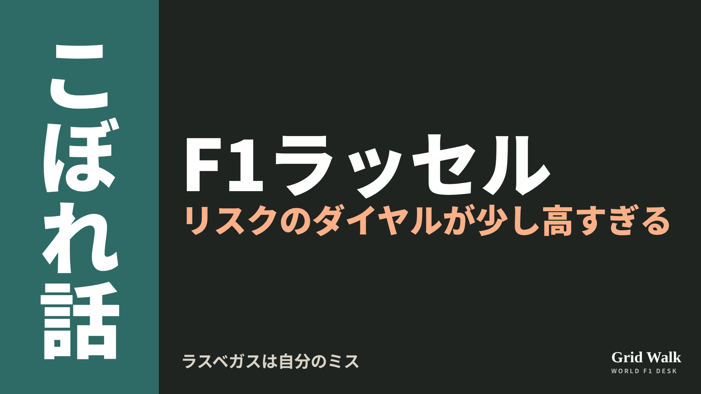<button class="cp dl" data-img="img/x_russell-risk-dial-20261127.png" data-name="x_russell-risk-dial-20261127.png">ダウンロード</button></li>
<li class="st"><div class="hd"><b>① noteをシェアするときの文</b></div><div class="bx" id="p2x0">ラッセルが木曜会見で、ラスベガスの終盤のミスを振り返りました。「リスクのダイヤルが少し高すぎる」。チームメイトとの件は自分のミスだと認めています。noteにまとめました #F1jp #ラッセル #メルセデス</div><button class="cp" data-plain="p2x0">コピー</button></li>
<li class="st"><div class="hd"><b>② ①への返信</b></div><div class="bx" id="p2x1">ほかの海外記事も読みたい方は、F1 Grid Walkへ。
https://f1gridwalk.github.io/lens/russell-risk-dial-20261127/?utm_source=x&amp;utm_campaign=russell-risk-dial-20261127</div><button class="cp" data-plain="p2x1">コピー</button></li>
<li class="st"><div class="hd"><b>③ ②への返信</b></div><div class="bx" id="p2x2">毎日の海外F1ニュースは、日本語でこちらにまとめています。
https://f1gridwalk.github.io/</div><button class="cp" data-plain="p2x2">コピー</button></li>
</ol></section><section class="part" id="p3"><h2><span class="tag">OFF GRID</span>ハジャー「0.2秒早く閉じていれば」　ウイング破損は調査中</h2><p class="sub">サイトに公開：11:52</p><ol class="steps">
<li class="st im"><div class="hd"><span class="no">1</span><b>見出し画像</b><em>画像</em></div>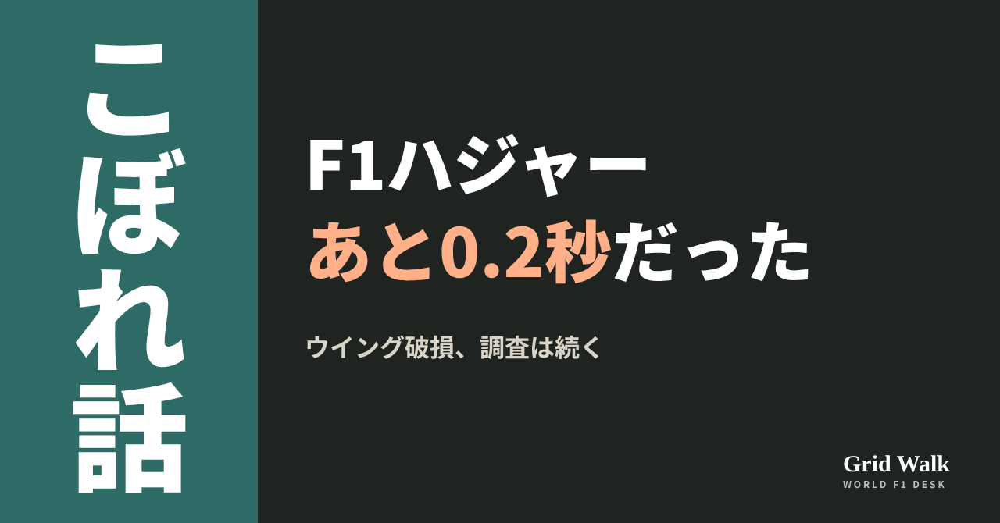<button class="cp dl" data-img="img/hadjar-two-tenths-earlier-20261127.png" data-name="hadjar-two-tenths-earlier-20261127_見出し画像.png">ダウンロード</button></li>
<li class="st"><div class="hd"><span class="no">2</span><b>タイトル</b></div><div class="bx" id="p3t">ハジャー「0.2秒早く閉じていれば」　ウイング破損は調査中</div><button class="cp" data-plain="p3t">タイトルをコピー</button></li>
<li class="st"><div class="hd"><span class="no">3</span><b>本文</b></div><div class="bx tall" id="p3r"><p>ラスベガスGPで優勝を争っていたレッドブルのアイザック・ハジャーは、フロントウイングが壊れてピットに戻り、15位に終わりました（F1公式）。現地11月26日、カタールGPを前にしたFIAの木曜会見で、ハジャーは原因をこう振り返りました。</p><p>ウイングが壊れた場面を紹介したコラムと、元の記事へのリンクはサイトで → <a href="https://f1gridwalk.github.io/lens/hadjar-two-tenths-earlier-20261127/?utm_source=note&amp;utm_campaign=hadjar-two-tenths-earlier-20261127">https://f1gridwalk.github.io/lens/hadjar-two-tenths-earlier-20261127/?utm_source=note&amp;utm_campaign=hadjar-two-tenths-earlier-20261127</a></p><p>質問したのはイギリスのスカイスポーツのデビッド・クロフトです。縁石に乗ったのか、ほかの車に当たったのか、なぜあんなふうに壊れたのか、と聞きました。</p><blockquote><p>「不運なタイミングだったんだと思う。閉じている瞬間と、段差の瞬間と、全部がぴったり重なってしまった。だからフロントウイングが耐えられなかった」（ハジャー、FIA会見）</p></blockquote><h2>0.2秒の差</h2><p>ハジャーは、ほんのわずかな時間の差だったと考えています。</p><blockquote><p>「システムを0.2秒早く閉じていれば、こうはならなかったと、本当に思う」「まさにあの瞬間に吹き飛ぶように、全部がそろってしまったんだと思う。本当に運が悪かった」（ハジャー、FIA会見）</p></blockquote><p>何を閉じていたのか、ハジャーは会見で名前を挙げていません。イタリアのFormula1.itも、可動の機構を閉じている最中だったと書くだけです。2026年の車は、前の翼のフラップも走りながら動きます。仕組みは用語集 https://f1gridwalk.github.io/deep/rules/front-wing/ で。壊れた場面は、コラム https://f1gridwalk.github.io/lens/hadjar-front-wing-vegas-20261122/ で紹介しています。</p><h2>補強はしたが、調査は続く</h2><blockquote><p>「チームは週末に向けて取り組んで、補強してきた。もう起きないだけの余裕はあるはずだ」「まだ調査中だけど、そう、ひとりでに壊れている」「ここで起きてほしいことでないのは確かだ。でも、チームは懸命に取り組んでいる」（ハジャー、FIA会見）</p></blockquote><p>Formula1.itは11月26日の記事で、この話を一歩進めて読んでいます。記事は補強の言葉を、週末のあいだに翼を補強していたという意味で伝え、レッドブルが状況を知っていたことをうかがわせる、と書きました。ただ、FIAの書き起こしの英語では「週末に向けて」補強してきたという言い方で、ラスベガスの前に補強していたとまでは話していません。記事によると、レッドブルはラスベガスでフロントウイングにも手を入れ、FIAの資料ではダイブプレーンだけの変更とされていました。記事は、材料を変えるなど目に見えない更新もあったかもしれず、それが可動の機構の強さに響いた可能性がある、と推測しています。公式な確認はまだないことも、はっきり書いています。サイトの要約は https://f1gridwalk.github.io/news/it-formula1it-hadjar-front-wing-collapse/ にあります。</p><h2>いちばん近づいた勝利</h2><p>カナダのTSNのティム・ハウラニーには、勝利がどれだけ近づいているかを聞かれました。</p><blockquote><p>「今シーズン全体でも、キャリア全体でも、いちばん近づいた」「選手権ではもう何も懸かっていないから、リスクも取れる。新しいことを試して、思いきり楽しんで、大物たちと戦うだけだ」（ハジャー、FIA会見）</p></blockquote><p>フェルスタッペンとの争いは楽しかったが、フロントウイングが吹き飛んだ、と残念がりました。カタールは気温の面でまったく違う週末で、速度域もまったく違うとしたうえで、こう話しています。</p><blockquote><p>「とにかく車は強いと思う。うん、楽しみにしているよ」（ハジャー、FIA会見）</p></blockquote><p>残りは第22戦カタールGP（11月27〜29日）と第23戦アブダビGP（12月4〜6日）の2戦です（F1公式）。編集部としては、0.2秒という言葉は、それほど小さな重なりで壊れたという説明だと見ています。補強が足りているかは、ルサイルの週末で試されることになりそうです。</p><p><strong>0.2秒の不運か、部品の弱さか。あなたは、ハジャーのウイングの破損をどう見ますか？</strong></p><p>━━━━━━━━━━</p><p><strong>F1 Grid Walk では、世界のF1ニュースを毎日日本語でまとめています。</strong></p><p>海外の記事の要約を、毎日載せています。</p><p><a href="https://f1gridwalk.github.io/">https://f1gridwalk.github.io/</a></p><p>ほかの海外記事も読みたい方は、F1 Grid Walkへ。</p><p><a href="https://f1gridwalk.github.io/lens/hadjar-two-tenths-earlier-20261127/">https://f1gridwalk.github.io/lens/hadjar-two-tenths-earlier-20261127/</a></p><p>━━━━━━━━━━</p><p><a href="https://www.fia.com/news/f1-2026-qatar-grand-prix-thursday-press-conference-transcript">出典：FIA（国際）</a></p><p><a href="https://www.formula1.it/news/34247/1/la-red-bull-sapeva-indagini-ancora-in-corso-sul-collasso-dell-ala-di-hadjar">出典：Formula1.it（イタリア）</a></p><p><a href="https://www.formula1.com/en/results/2026/races/1300/las-vegas/race-result">出典：F1公式サイト（イギリス）</a></p><p><a href="https://www.formula1.com/en/racing/2026">出典：F1公式サイト（イギリス）</a></p></div><button class="cp" data-rich="p3r">本文をコピー</button></li>
<li class="st"><div class="hd"><span class="no">4</span><b>ハッシュタグ</b></div><div class="bx" id="p3h">#F1 #F1jp #レッドブル #ハジャー #カタールGP #ラスベガスGP #フロントウイング #F1こぼれ話 #OFFGRID</div><button class="cp" data-plain="p3h">タグをコピー</button></li>
</ol><h3 class="xh">X</h3><ol class="steps">
<li class="st im"><div class="hd"><b>X用の画像</b><em>画像</em></div>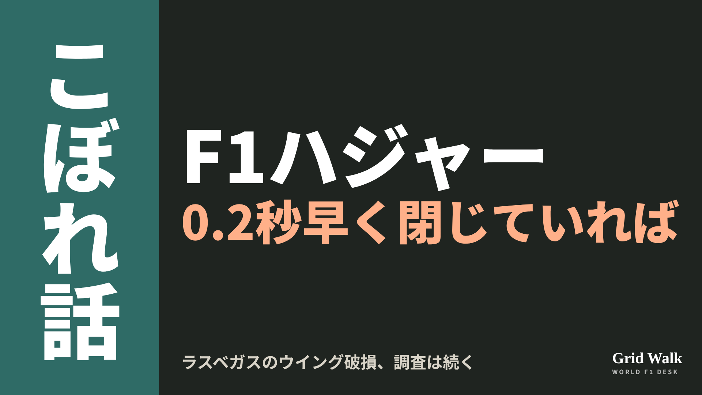<button class="cp dl" data-img="img/x_hadjar-two-tenths-earlier-20261127.png" data-name="x_hadjar-two-tenths-earlier-20261127.png">ダウンロード</button></li>
<li class="st"><div class="hd"><b>① noteをシェアするときの文</b></div><div class="bx" id="p3x0">ラスベガスでフロントウイングが壊れたハジャー。木曜会見で「0.2秒早く閉じていれば」壊れなかったと話しました。原因の調査は続いています。noteにまとめました #F1jp #ハジャー #レッドブル</div><button class="cp" data-plain="p3x0">コピー</button></li>
<li class="st"><div class="hd"><b>② ①への返信</b></div><div class="bx" id="p3x1">ほかの海外記事も読みたい方は、F1 Grid Walkへ。
https://f1gridwalk.github.io/lens/hadjar-two-tenths-earlier-20261127/?utm_source=x&amp;utm_campaign=hadjar-two-tenths-earlier-20261127</div><button class="cp" data-plain="p3x1">コピー</button></li>
<li class="st"><div class="hd"><b>③ ②への返信</b></div><div class="bx" id="p3x2">毎日の海外F1ニュースは、日本語でこちらにまとめています。
https://f1gridwalk.github.io/</div><button class="cp" data-plain="p3x2">コピー</button></li>
</ol></section><section class="part" id="p4"><h2><span class="tag">OFF GRID</span>ペレス、木曜会見に間に合わずスチュワードへ　飛行機の遅れと英誌</h2><p class="sub">サイトに公開：11:50</p><ol class="steps">
<li class="st im"><div class="hd"><span class="no">1</span><b>見出し画像</b><em>画像</em></div>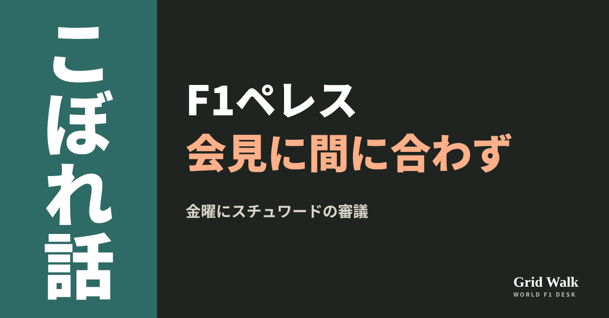<button class="cp dl" data-img="img/perez-press-conference-summons-20261127.png" data-name="perez-press-conference-summons-20261127_見出し画像.png">ダウンロード</button></li>
<li class="st"><div class="hd"><span class="no">2</span><b>タイトル</b></div><div class="bx" id="p4t">ペレス、木曜会見に間に合わずスチュワードへ　飛行機の遅れと英誌</div><button class="cp" data-plain="p4t">タイトルをコピー</button></li>
<li class="st"><div class="hd"><span class="no">3</span><b>本文</b></div><div class="bx tall" id="p4r"><p>カタールGPの木曜日、キャデラックのセルジオ・ペレスが、出るはずだったFIAの記者会見に間に合いませんでした。FIAはペレスをスチュワードに呼び出しています。イギリスのPlanetF1が11月26日に伝えました。</p><p>会見の義務と過去の遅刻の罰を説明したルールブックへの案内はサイトで → <a href="https://f1gridwalk.github.io/lens/perez-press-conference-summons-20261127/?utm_source=note&amp;utm_campaign=perez-press-conference-summons-20261127">https://f1gridwalk.github.io/lens/perez-press-conference-summons-20261127/?utm_source=note&amp;utm_campaign=perez-press-conference-summons-20261127</a></p><h2>2人だけで終わった2回目の会見</h2><p>PlanetF1によると、ルサイルでの木曜の会見は2回に分かれていました。1回目はオリバー・ベアマン、ジョージ・ラッセル、アイザック・ハジャー。ペレスは2回目に、シャルル・ルクレール、オスカー・ピアストリと並ぶ予定でした。ところがペレスは2回目の間ずっと姿を見せず、会見はルクレールとピアストリの2人で進みました。ペレスが着いたときには2人はもう席を立っていて、ペレスは1人で記者の質問を受けたといいます。</p><p>遅れた理由について、PlanetF1は、ペレスの乗った飛行機のカタール到着が遅れたと理解している、と書いています。チームや本人の説明は、記事にはありません。</p><h2>6月のモナコは、執行猶予つきの罰金</h2><p>PlanetF1によると、会見のあと、FIAはペレスとキャデラックの代表をスチュワードに呼び出しました。審議は金曜（現地）に開かれる予定です。11月27日の朝（日本時間）の時点で、結論はまだ出ていません。</p><p>前例もあります。PlanetF1によると、6月のモナコGPでは、ルクレールとランド・ノリスが木曜の会見に遅れて調べられ、フェラーリとマクラーレンにそれぞれ5000ユーロの執行猶予つきの罰金が出ました。イギリスのAutosportによると、このときの呼び出しの理由は、規則B10.1.1aにかかわる木曜の会見への遅刻でした。</p><p>PlanetF1は、ペレスが2回目の会見をまるごと逃していることから、ペレスとキャデラックへの罰がこれまでより重くなるかもしれない、とも書いています。会見の義務と過去の遅刻の罰は、ルールブック https://f1gridwalk.github.io/deep/rules/media-day/ に、執行猶予の仕組みは https://f1gridwalk.github.io/deep/rules/suspended-penalty/ にまとめています。</p><h2>1人の会見で話した、3年のこと</h2><p>ペレスが1人で受けた会見は、FIAが書き起こしを公開しています。今季を振り返ってほしいと聞かれたペレスは、こう答えました。</p><blockquote><p>「本当にうれしいよ。キャリアをさらに3年延ばすことになるとは、思ってもいなかった」「このプロジェクトには、本当に有望なところがある」（ペレス、FIAの会見の書き起こし）</p></blockquote><p>キャデラックは10月、ペレスが少なくとも2029年のシーズンの終わりまでチームに残ると発表しています（PlanetF1）。発表のときの各国の見出しの違いは、コラム https://f1gridwalk.github.io/lens/perez-cadillac-2029-20261029/ で紹介しました。同じ会見でペレスは、高速の区間が多いカタールは厳しい週末になりそうで、ライバルについていくのにかなり苦しむだろうという見方も示しています。</p><p>F1公式の順位では、ペレスはまだ0点で24位です。カタールでは、ラスベガスでの接触の罰で5グリッド降格を受けます（ https://f1gridwalk.github.io/lens/perez-qatar-grid-penalty-20261123/ ）。1年目のペレスの歩みは、読み解き https://f1gridwalk.github.io/topics/perez-no-room-for-just-happy-to-be-here/ で追っています。</p><p>編集部としては、木曜の会見はFIAが決めた義務の場なので、PlanetF1が伝えた飛行機の遅れという事情をスチュワードがどこまで考えに入れるかが、この審議の見どころだと見ています。</p><p><strong>移動の遅れで会見に間に合わなかったとき、チームに罰を科すのは妥当だと思いますか？</strong></p><p>━━━━━━━━━━</p><p><strong>F1 Grid Walk では、世界のF1ニュースを毎日日本語でまとめています。</strong></p><p>海外の記事の要約を、毎日載せています。</p><p><a href="https://f1gridwalk.github.io/">https://f1gridwalk.github.io/</a></p><p>ほかの海外記事も読みたい方は、F1 Grid Walkへ。</p><p><a href="https://f1gridwalk.github.io/lens/perez-press-conference-summons-20261127/">https://f1gridwalk.github.io/lens/perez-press-conference-summons-20261127/</a></p><p>━━━━━━━━━━</p><p><a href="https://planetf1.com/news/fia-sergio-perez-qatar-grand-prix-2026-investigation">出典：PlanetF1（イギリス）</a></p><p><a href="https://www.fia.com/news/f1-2026-qatar-grand-prix-thursday-press-conference-transcript">出典：FIA（国際）</a></p><p><a href="https://www.autosport.com/f1/news/why-norris-and-leclerc-have-been-summoned-to-the-fia-stewards-before-hitting-the-track-in-monaco/">出典：Autosport（イギリス）</a></p><p><a href="https://www.formula1.com/en/results/2026/drivers">出典：F1公式サイト（イギリス）</a></p></div><button class="cp" data-rich="p4r">本文をコピー</button></li>
<li class="st"><div class="hd"><span class="no">4</span><b>ハッシュタグ</b></div><div class="bx" id="p4h">#F1 #F1jp #ペレス #キャデラック #カタールGP #FIA #スチュワード #F1こぼれ話 #OFFGRID</div><button class="cp" data-plain="p4h">タグをコピー</button></li>
</ol><h3 class="xh">X</h3><ol class="steps">
<li class="st im"><div class="hd"><b>X用の画像</b><em>画像</em></div>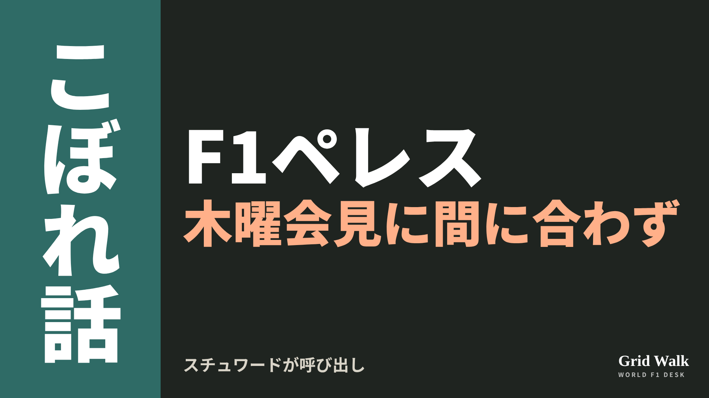<button class="cp dl" data-img="img/x_perez-press-conference-summons-20261127.png" data-name="x_perez-press-conference-summons-20261127.png">ダウンロード</button></li>
<li class="st"><div class="hd"><b>① noteをシェアするときの文</b></div><div class="bx" id="p4x0">カタールGPの木曜会見に、ペレスが間に合いませんでした。英PlanetF1は飛行機の遅れと伝えています。スチュワードが呼び出し、審議は金曜です。noteにまとめました #F1jp #ペレス #キャデラック</div><button class="cp" data-plain="p4x0">コピー</button></li>
<li class="st"><div class="hd"><b>② ①への返信</b></div><div class="bx" id="p4x1">ほかの海外記事も読みたい方は、F1 Grid Walkへ。
https://f1gridwalk.github.io/lens/perez-press-conference-summons-20261127/?utm_source=x&amp;utm_campaign=perez-press-conference-summons-20261127</div><button class="cp" data-plain="p4x1">コピー</button></li>
<li class="st"><div class="hd"><b>③ ②への返信</b></div><div class="bx" id="p4x2">毎日の海外F1ニュースは、日本語でこちらにまとめています。
https://f1gridwalk.github.io/</div><button class="cp" data-plain="p4x2">コピー</button></li>
</ol></section><section class="part" id="p5"><h2><span class="tag">OFF GRID</span>ピアストリ「望んでいたシーズンではなかった」　ラスベガスの無線のわけも説明</h2><p class="sub">サイトに公開：11:48</p><ol class="steps">
<li class="st im"><div class="hd"><span class="no">1</span><b>見出し画像</b><em>画像</em></div>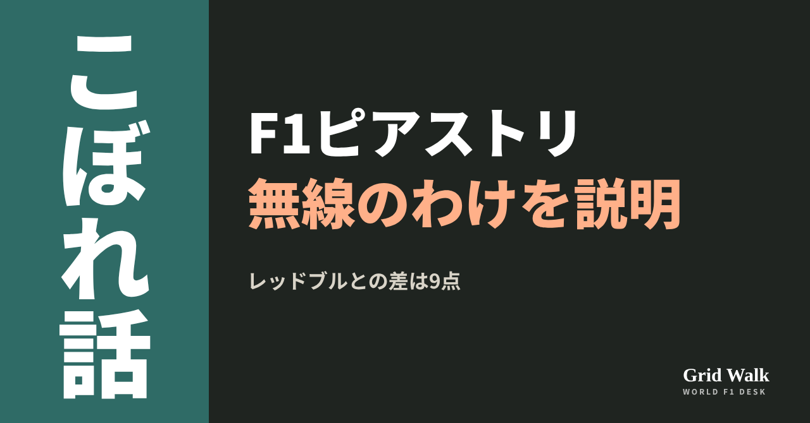<button class="cp dl" data-img="img/piastri-not-season-hoped-20261127.png" data-name="piastri-not-season-hoped-20261127_見出し画像.png">ダウンロード</button></li>
<li class="st"><div class="hd"><span class="no">2</span><b>タイトル</b></div><div class="bx" id="p5t">ピアストリ「望んでいたシーズンではなかった」　ラスベガスの無線のわけも説明</div><button class="cp" data-plain="p5t">タイトルをコピー</button></li>
<li class="st"><div class="hd"><span class="no">3</span><b>本文</b></div><div class="bx tall" id="p5r"><p>ラスベガスの無線のわけを、本人が説明しました。マクラーレンのオスカー・ピアストリは、カタールGPの木曜会見で、エンジニアに気をつけろと言うのをやめてほしいと強い口調で求めた理由を聞かれました。</p><p>会見の書き起こしへのリンクと、ラスベガスの無線を追った読み解きへの案内はサイトで → <a href="https://f1gridwalk.github.io/lens/piastri-not-season-hoped-20261127/?utm_source=note&amp;utm_campaign=piastri-not-season-hoped-20261127">https://f1gridwalk.github.io/lens/piastri-not-season-hoped-20261127/?utm_source=note&amp;utm_campaign=piastri-not-season-hoped-20261127</a></p><blockquote><p>「チームとして、自分たちがどこにいるかは分かっている。それをはっきりさせたかった。シーズンの終わりに向けた目標は、レッドブルを上回ろうとすることだと分かっているし、だから、気をつけろと言われる必要はない、ということなんだ」「たぶん言われる必要はないと、その点を伝えたかっただけだと思う」（ピアストリ、FIA会見の書き起こし）</p></blockquote><p>F1公式の順位では、ラスベガスGPを終えてマクラーレンはコンストラクターズ4位の431点、3位のレッドブルは440点で、差は9点です。ピアストリはラスベガスで3位に入りました。残りは第22戦カタール（11月27〜29日）と第23戦アブダビ（12月4〜6日）の2戦です。無線の場面とレース後のチームの反応は、読み解き https://f1gridwalk.github.io/topics/piastri-stop-telling-me-to-be-careful/ にまとめています。</p><h2>27周の上限で、全開に近いレースに</h2><p>カタールでは、ピレリが1セットのタイヤで走れるのを27周までと決めました（コラム https://f1gridwalk.github.io/lens/qatar-tyre-stint-limit-20261121/ ）。</p><blockquote><p>「正直、あまり意見はない。もちろん、これで2ストップのレースになる」「まずタイヤが実際にどうなるかを見ないといけない」「もともと2ストップになるのなら、周回の上限はあまり変わらない」「どちらかと言えば、より全開のレースになるということだと思う」（ピアストリ、FIA会見の書き起こし）</p></blockquote><p>ピットに入る時期の読み合いは、コラム https://f1gridwalk.github.io/lens/qatar-three-stop-trap-20261127/ で取り上げました。会見では、カタールではいつも表彰台に上がり、スプリントでも勝ってきたと話を向けられました。F1公式の日程では、今年のカタールにスプリントはありません。</p><blockquote><p>「まあ、スプリントの記録には傷がつかないから、それはいいね」「去年はもっと良くできたかもしれない。でも、ずっと楽しんできたコースだ」（ピアストリ、FIA会見の書き起こし）</p></blockquote><h2>今季のふり返り</h2><p>今季については、こう振り返りました。</p><blockquote><p>「もちろん、とても厳しかった。望んでいたシーズンではなかったのは確かだ」「1年のあちこちに、いいこともあった。先週末は間違いなくその一つだ。でも全体としては、望んでいたよりずっと難しい1年だった」（ピアストリ、FIA会見の書き起こし）</p></blockquote><p>いちばんの学びは、技術的な面で、今年のクルマの運転の仕方だったといいます。カナダのTSNの記者に、変えたのは規則の理解か、タイヤか、車体かと聞かれると、「正直、3つとも少しずつ」と答え、苦しんだ理由をこう話しました。</p><blockquote><p>「今年の苦しさは、パワーユニットそのものより、クルマの扱いとタイヤのふるまいによるものだったと思う」（ピアストリ、FIA会見の書き起こし）</p></blockquote><p>メキシコシティGPで受けた罰（コラム https://f1gridwalk.github.io/lens/piastri-accepts-penalty-20261107/ ）にからめてスチュワードの判断の釣り合いを聞かれると、少し厳しすぎたものも、少し甘かったものもあったかもしれないと認めたうえで、こう続けました。</p><blockquote><p>「その場で決めるのは決して簡単じゃない。決める役が自分でなくてよかったよ。でも、全体としてはかなりいい仕事をしていると思う」（ピアストリ、FIA会見の書き起こし）</p></blockquote><p>編集部としては、あの無線は苛立ちよりも、チームの目標を自分のこととして背負っている表れだと見ています。本人がまず9点差の相手の名前を挙げ、そのうえで注意はいらないと説明したからです。今季の流れは、読み解き https://f1gridwalk.github.io/topics/piastri-story-of-my-year/ で。</p><p><strong>レース中に気をつけろと声をかけるのは、エンジニアの大事な仕事の一つです。それに言い返したピアストリを、あなたはどう見ますか？</strong></p><p>━━━━━━━━━━</p><p><strong>F1 Grid Walk では、世界のF1ニュースを毎日日本語でまとめています。</strong></p><p>海外の記事の要約を、毎日載せています。</p><p><a href="https://f1gridwalk.github.io/">https://f1gridwalk.github.io/</a></p><p>ほかの海外記事も読みたい方は、F1 Grid Walkへ。</p><p><a href="https://f1gridwalk.github.io/lens/piastri-not-season-hoped-20261127/">https://f1gridwalk.github.io/lens/piastri-not-season-hoped-20261127/</a></p><p>━━━━━━━━━━</p><p><a href="https://www.fia.com/news/f1-2026-qatar-grand-prix-thursday-press-conference-transcript">出典：FIA（フランス）</a></p><p><a href="https://www.formula1.com/en/results/2026/team">出典：F1公式サイト（イギリス）</a></p><p><a href="https://www.formula1.com/en/results/2026/races/1300/las-vegas/race-result">出典：F1公式サイト（イギリス）</a></p><p><a href="https://www.formula1.com/en/racing/2026/qatar">出典：F1公式サイト（イギリス）</a></p><p><a href="https://www.formula1.com/en/racing/2026">出典：F1公式サイト（イギリス）</a></p></div><button class="cp" data-rich="p5r">本文をコピー</button></li>
<li class="st"><div class="hd"><span class="no">4</span><b>ハッシュタグ</b></div><div class="bx" id="p5h">#F1 #F1jp #マクラーレン #ピアストリ #カタールGP #チーム無線 #コンストラクターズ #F1こぼれ話 #OFFGRID</div><button class="cp" data-plain="p5h">タグをコピー</button></li>
</ol><h3 class="xh">X</h3><ol class="steps">
<li class="st im"><div class="hd"><b>X用の画像</b><em>画像</em></div>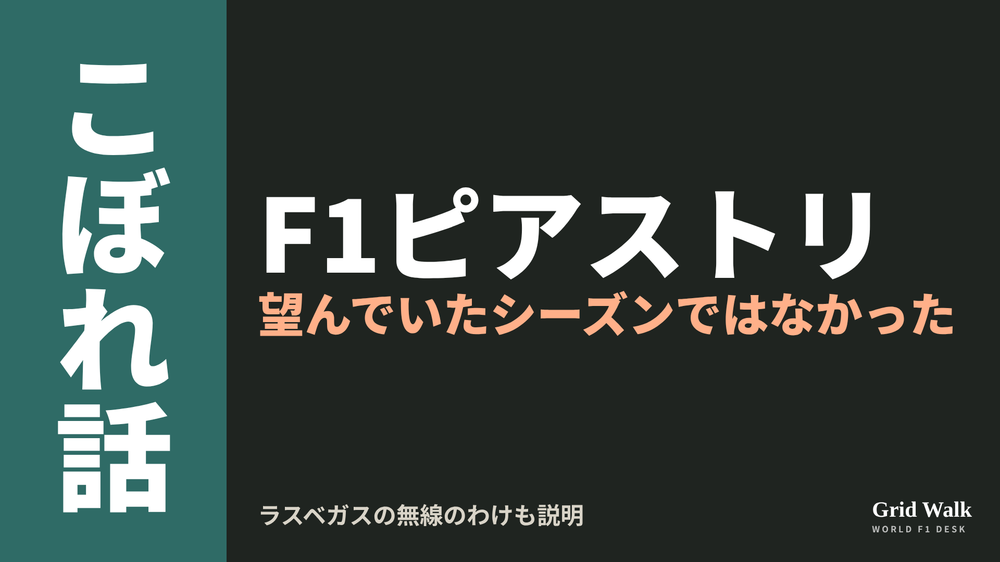<button class="cp dl" data-img="img/x_piastri-not-season-hoped-20261127.png" data-name="x_piastri-not-season-hoped-20261127.png">ダウンロード</button></li>
<li class="st"><div class="hd"><b>① noteをシェアするときの文</b></div><div class="bx" id="p5x0">ピアストリが木曜会見で今季を振り返りました。「望んでいたシーズンではなかった」。ラスベガスの無線で何を求めたのかも説明しています。noteにまとめました #F1jp #ピアストリ #マクラーレン</div><button class="cp" data-plain="p5x0">コピー</button></li>
<li class="st"><div class="hd"><b>② ①への返信</b></div><div class="bx" id="p5x1">ほかの海外記事も読みたい方は、F1 Grid Walkへ。
https://f1gridwalk.github.io/lens/piastri-not-season-hoped-20261127/?utm_source=x&amp;utm_campaign=piastri-not-season-hoped-20261127</div><button class="cp" data-plain="p5x1">コピー</button></li>
<li class="st"><div class="hd"><b>③ ②への返信</b></div><div class="bx" id="p5x2">毎日の海外F1ニュースは、日本語でこちらにまとめています。
https://f1gridwalk.github.io/</div><button class="cp" data-plain="p5x2">コピー</button></li>
</ol></section><section class="part" id="p6"><h2><span class="tag">OFF GRID</span>ハミルトンの2028年オプション説、独誌が再び　ブランドルは5月にも</h2><p class="sub">サイトに公開：11:46</p><ol class="steps">
<li class="st im"><div class="hd"><span class="no">1</span><b>見出し画像</b><em>画像</em></div>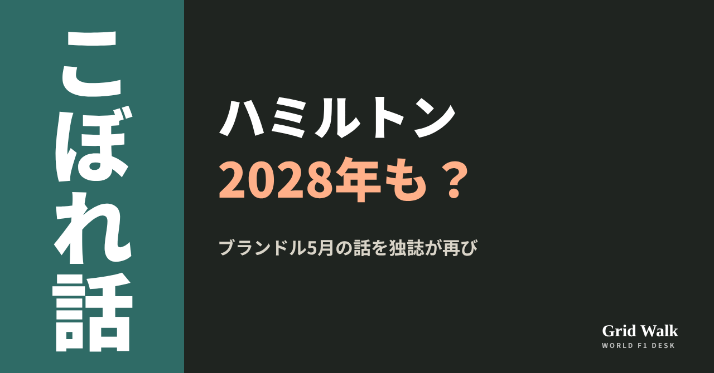<button class="cp dl" data-img="img/hamilton-option-2028-20261127.png" data-name="hamilton-option-2028-20261127_見出し画像.png">ダウンロード</button></li>
<li class="st"><div class="hd"><span class="no">2</span><b>タイトル</b></div><div class="bx" id="p6t">ハミルトンの2028年オプション説、独誌が再び　ブランドルは5月にも</div><button class="cp" data-plain="p6t">タイトルをコピー</button></li>
<li class="st"><div class="hd"><span class="no">3</span><b>本文</b></div><div class="bx tall" id="p6r"><p>フェラーリのルイス・ハミルトンには、チームの意向に関係なく、2028年末まで残れる片側のオプションがある。ドイツのF1-Insiderが11月26日、イギリスのスカイで解説するマーティン・ブランドルの言葉として、そう伝えました。ただし、これは新しい発言ではありません。同誌は時期も番組も書いていませんが、その言葉は、ブランドルが5月にスカイスポーツF1で話した英語の言葉を訳すと同じ内容です。フェラーリも本人も、そうした条項があるとは発表していません。</p><p>ブランドルが3月と5月に話した英語の元の記事へのリンクはサイトで → <a href="https://f1gridwalk.github.io/lens/hamilton-option-2028-20261127/?utm_source=note&amp;utm_campaign=hamilton-option-2028-20261127">https://f1gridwalk.github.io/lens/hamilton-option-2028-20261127/?utm_source=note&amp;utm_campaign=hamilton-option-2028-20261127</a></p><p>F1-Insiderによると、ブランドルの話はハミルトンの周りから聞いたものだといいます。サイトの要約は https://f1gridwalk.github.io/news/de-f1insider-hamilton-contract-option-2028/ にあります。</p><h2>元は5月と3月の発言</h2><p>RacingNews365の英語版は5月23日、カナダGPのメディアデーにFIAの会見でハミルトンが批判に答えたのを受けて、ブランドルがスカイスポーツF1でこう話したと伝えています。</p><blockquote><p>「でも僕の理解では、ルイスには2028年についても、本人に有利な片側のオプションがある。フェラーリに残りたいなら、だけどね」（ブランドル、RacingNews365／イギリス）</p></blockquote><p>F1-Insiderが載せた言葉も、この「フェラーリに残りたいなら」までを含めて同じ中身です。開幕前の3月3日には、イギリスのSPORTbibleの単独取材で、ブランドルは少し控えめな言い方をしていました。</p><blockquote><p>「ルイスが、それ（2年プラス1年）より長い固定の契約なしにフェラーリへ移ったとは思わない。僕の理解では、2028年について片側のオプションさえ持っているかもしれない」（ブランドル、SPORTbible／イギリス）</p></blockquote><h2>確かなのは2027年末まで</h2><p>F1-Insiderも、この条項は公式には確認されていないと書いています。確かなのは少なくとも2027年末までの契約で、同誌は取材で、こうした条項は実際にあり得ると聞いたとしています。ハミルトンは5月、カナダGPを前に、来季について聞かれてこう答えていました。</p><blockquote><p>「まだ契約があるから、僕にとってはすべて100パーセントはっきりしている」（ハミルトン、スカイスポーツ／イギリス）</p></blockquote><p>スカイスポーツは、この契約を2027年末までの少なくとも3年契約と書いています（契約は https://f1gridwalk.github.io/lens/hamilton-built-differently-20261030/ も）。</p><p>背景として、F1-Insiderは、ルクレールとの新たな接触のあと、フェラーリで2人の将来が話し合われていると書いています。ラスベガスGPでの接触は https://f1gridwalk.github.io/lens/ferrari-leclerc-hamilton-contact-20261122/ で。同誌によると、ルクレールは今年、契約を少なくとも2028年末まで延ばしています。ハミルトン本人はラスベガスGPの前、冬休みに延長の交渉をするかと聞かれ、まだ考えてもいない、いまは契約の途中で、そうした話はふつう最後の年にするものだ、と答えたと同誌は伝えています。</p><h2>43歳の、フェラーリ4年目</h2><p>F1-Insiderによると、ハミルトンは1月に42歳になります。2028年のオプションを使えば、フェラーリでの4年目を43歳で走ることになり、ミハエル・シューマッハーがメルセデスで最後に走った年と同じ年齢だ、と同誌は書いています。記事は、フェラーリがいつまでハミルトンと走るつもりなのか、ハミルトン自身はいつまで走りたいのか、という問いで結ばれています。</p><p>編集部としては、ラスベガスのあとに出てきた新しい事実ではなく、ブランドルが3月と5月に話していた理解が、ドイツ語の記事で改めて取り上げられたものと見ています。3月の「かもしれない」が5月には言い切りに変わった点は目を引きますが、あくまで解説者の理解です。</p><p><strong>ハミルトンは2028年も、フェラーリで走っていると思いますか？</strong></p><p>━━━━━━━━━━</p><p><strong>F1 Grid Walk では、世界のF1ニュースを毎日日本語でまとめています。</strong></p><p>海外の記事の要約を、毎日載せています。</p><p><a href="https://f1gridwalk.github.io/">https://f1gridwalk.github.io/</a></p><p>ほかの海外記事も読みたい方は、F1 Grid Walkへ。</p><p><a href="https://f1gridwalk.github.io/lens/hamilton-option-2028-20261127/">https://f1gridwalk.github.io/lens/hamilton-option-2028-20261127/</a></p><p>━━━━━━━━━━</p><p><a href="https://f1-insider.com/formel-1-hamilton-ferrari-vertrag-trumpf-84242/">出典：F1-Insider（ドイツ）</a></p><p><a href="https://racingnews365.com/martin-brundle-reveals-unknown-lewis-hamilton-ferrari-contract-clause">出典：RacingNews365（イギリス）</a></p><p><a href="https://www.sportbible.com/f1/exclusive-martin-brundle-lewis-hamilton-ferrari-contract-clause-065386-20260302">出典：SPORTbible（イギリス）</a></p><p><a href="https://www.skysports.com/f1/news/12040/13546658/lewis-hamilton-ferrari-driver-says-lots-of-people-are-trying-to-retire-me-as-he-confirms-contract-until-at-least-2027">出典：Sky Sports（イギリス）</a></p></div><button class="cp" data-rich="p6r">本文をコピー</button></li>
<li class="st"><div class="hd"><span class="no">4</span><b>ハッシュタグ</b></div><div class="bx" id="p6h">#F1 #F1jp #ハミルトン #フェラーリ #ブランドル #契約 #カタールGP #F1こぼれ話 #OFFGRID</div><button class="cp" data-plain="p6h">タグをコピー</button></li>
</ol><h3 class="xh">X</h3><ol class="steps">
<li class="st im"><div class="hd"><b>X用の画像</b><em>画像</em></div>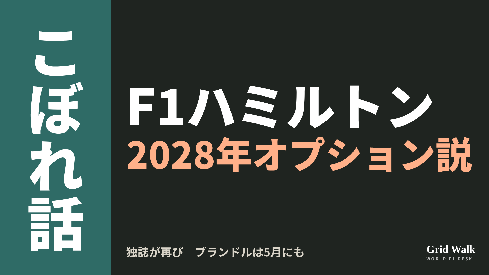<button class="cp dl" data-img="img/x_hamilton-option-2028-20261127.png" data-name="x_hamilton-option-2028-20261127.png">ダウンロード</button></li>
<li class="st"><div class="hd"><b>① noteをシェアするときの文</b></div><div class="bx" id="p6x0">ハミルトンが2028年までフェラーリに残れる片側のオプションを持つ、という見方を独F1-Insider.comが再び伝えました。ブランドルは5月にも同じことを話していました。noteにまとめました #F1jp #ハミルトン</div><button class="cp" data-plain="p6x0">コピー</button></li>
<li class="st"><div class="hd"><b>② ①への返信</b></div><div class="bx" id="p6x1">ほかの海外記事も読みたい方は、F1 Grid Walkへ。
https://f1gridwalk.github.io/lens/hamilton-option-2028-20261127/?utm_source=x&amp;utm_campaign=hamilton-option-2028-20261127</div><button class="cp" data-plain="p6x1">コピー</button></li>
<li class="st"><div class="hd"><b>③ ②への返信</b></div><div class="bx" id="p6x2">毎日の海外F1ニュースは、日本語でこちらにまとめています。
https://f1gridwalk.github.io/</div><button class="cp" data-plain="p6x2">コピー</button></li>
</ol></section><section class="part" id="p7"><h2><span class="tag">OFF GRID</span>アロンソ、ウイルス感染でメディアデー欠席　金曜にパドックへ戻る予定</h2><p class="sub">サイトに公開：11:44</p><ol class="steps">
<li class="st im"><div class="hd"><span class="no">1</span><b>見出し画像</b><em>画像</em></div>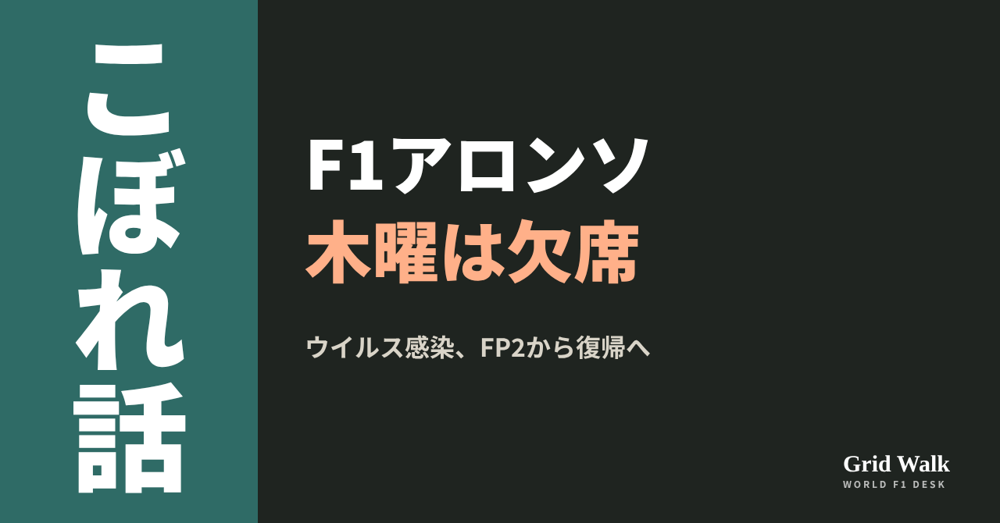<button class="cp dl" data-img="img/alonso-virus-media-day-20261127.png" data-name="alonso-virus-media-day-20261127_見出し画像.png">ダウンロード</button></li>
<li class="st"><div class="hd"><span class="no">2</span><b>タイトル</b></div><div class="bx" id="p7t">アロンソ、ウイルス感染でメディアデー欠席　金曜にパドックへ戻る予定</div><button class="cp" data-plain="p7t">タイトルをコピー</button></li>
<li class="st"><div class="hd"><span class="no">3</span><b>本文</b></div><div class="bx tall" id="p7r"><p>第22戦カタールGPを前にした11月26日（木）、アストンマーティンのフェルナンド・アロンソは、公式のメディア対応に姿を見せませんでした。ドイツのF1-Insiderによると、理由はウイルスへの感染です。チームの声明では、前戦ラスベガスGPの週末の終わりごろにかかったといいます。サイトの要約は https://f1gridwalk.github.io/news/de-f1insider-alonso-virus-qatar-media-day/ にあります。</p><p>元の記事へのリンクと、クロフォードがFP1を走る経緯を書いたコラムへの案内はサイトで → <a href="https://f1gridwalk.github.io/lens/alonso-virus-media-day-20261127/?utm_source=note&amp;utm_campaign=alonso-virus-media-day-20261127">https://f1gridwalk.github.io/lens/alonso-virus-media-day-20261127/?utm_source=note&amp;utm_campaign=alonso-virus-media-day-20261127</a></p><p>アストンマーティン自身の発表の原文は見つからず、声明の文はF1-Insiderが載せたドイツ語の引用から編集部が訳しました。</p><blockquote><p>「フェルナンドは、今日のメディアデーを欠席します」「回復に向かっています」（アストンマーティンの声明、F1-Insiderのドイツ語の引用から訳／ドイツ）</p></blockquote><p>F1-Insiderによると、パドックに戻るのは金曜の予定です。記事が伝えているのはウイルス性の感染ということだけで、病名や症状の説明はありません。</p><h2>金曜の1回目は、もともとクロフォード</h2><p>金曜の1回目のフリー走行（FP1）も、アロンソは走りません。ただ、F1-Insiderは、これは体調とは関係がないと書いています。FP1でアロンソの車に乗るのは、サードドライバーのジャック・クロフォード。ラスベガスでは大雨でクロフォードの走る機会が失われ、カタールでもう一度その機会が与えられた形だといいます。この入れ替えが決まった経緯は、OFF GRID https://f1gridwalk.github.io/lens/crawford-qatar-fp1-20261126/ で書いています。</p><p>F1-Insiderによると、アロンソが車に戻るのは2回目のフリー走行（FP2）からの予定です。F1公式の日程では、FP1は現地27日の16時30分（日本時間22時30分）、FP2は同じ日の20時（日本時間28日の午前2時）に始まります。二つのセッションのあいだは2時間半です。</p><h2>2年前のメキシコでも、木曜を休んで金曜に</h2><p>アロンソが体調を崩して木曜のメディア対応を休むのは、これが初めてではありません。F1公式によると、2024年のメキシコシティGPでも、体調不良を理由に木曜のメディア対応を欠席し、金曜のFP2に間に合うように戻りました。このときも、FP1はもともとフェリペ・ドルゴビッチに譲る予定だったといいます。</p><p>今回の前戦ラスベガスGPは、F1公式の結果で、50周のレースのうち49周でDNF（リタイア）となり、19位に数えられて0点でした。F1-Insiderも、アロンソにとって期待外れの週末だったと書いています。最後の周に車を止めた経緯は、コラム https://f1gridwalk.github.io/lens/honda-vegas-right-direction-20261123/ で紹介しています。</p><p>F1公式のカレンダーでは、今季はカタール（11月27〜29日）と最終戦アブダビGP（12月4〜6日）の2戦を残すだけです。</p><p>編集部としては、FP1をもともとクロフォードに任せる予定だったため、アロンソは金曜の夜のFP2まで回復にあてられる形になったと見ています。2年前のメキシコと同じように、FP2から週末に入る段取りです。まずはそのFP2で、アロンソがどれだけ周回を重ね、どんな走りを見せるかに注目です。</p><p><strong>FP1を若手に任せていたことは、結果としてアロンソとチームの助けになったと思いますか？</strong></p><p>━━━━━━━━━━</p><p><strong>F1 Grid Walk では、世界のF1ニュースを毎日日本語でまとめています。</strong></p><p>海外の記事の要約を、毎日載せています。</p><p><a href="https://f1gridwalk.github.io/">https://f1gridwalk.github.io/</a></p><p>ほかの海外記事も読みたい方は、F1 Grid Walkへ。</p><p><a href="https://f1gridwalk.github.io/lens/alonso-virus-media-day-20261127/">https://f1gridwalk.github.io/lens/alonso-virus-media-day-20261127/</a></p><p>━━━━━━━━━━</p><p><a href="https://f1-insider.com/formel-1-weltmeister-setzt-in-katar-aus-84246/">出典：F1-Insider.com（ドイツ）</a></p><p><a href="https://www.formula1.com/en/latest/article/alonso-to-miss-media-day-in-sao-paulo-after-receiving-medical-treatment.Ubs9OUMwQyzC8pH4AHn5l">出典：F1公式サイト（イギリス）</a></p><p><a href="https://www.formula1.com/en/results/2026/races/1300/las-vegas/race-result">出典：F1公式サイト（イギリス）</a></p><p><a href="https://www.formula1.com/en/latest/article/formula-1-qatar-airways-qatar-grand-prix-2026.3XJyoYSnpJEcuZovstTdcG">出典：F1公式サイト（イギリス）</a></p></div><button class="cp" data-rich="p7r">本文をコピー</button></li>
<li class="st"><div class="hd"><span class="no">4</span><b>ハッシュタグ</b></div><div class="bx" id="p7h">#F1 #F1jp #アストンマーティン #アロンソ #クロフォード #カタールGP #メディアデー #F1こぼれ話 #OFFGRID</div><button class="cp" data-plain="p7h">タグをコピー</button></li>
</ol><h3 class="xh">X</h3><ol class="steps">
<li class="st im"><div class="hd"><b>X用の画像</b><em>画像</em></div>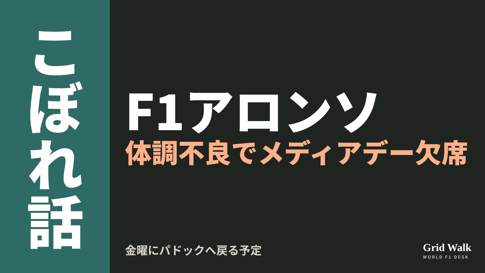<button class="cp dl" data-img="img/x_alonso-virus-media-day-20261127.png" data-name="x_alonso-virus-media-day-20261127.png">ダウンロード</button></li>
<li class="st"><div class="hd"><b>① noteをシェアするときの文</b></div><div class="bx" id="p7x0">アロンソが体調不良でカタールGPのメディアデーを欠席。チームは金曜にはパドックに戻る予定としています。FP1はもともとクロフォードが乗る予定です。noteにまとめました #F1jp #アロンソ</div><button class="cp" data-plain="p7x0">コピー</button></li>
<li class="st"><div class="hd"><b>② ①への返信</b></div><div class="bx" id="p7x1">ほかの海外記事も読みたい方は、F1 Grid Walkへ。
https://f1gridwalk.github.io/lens/alonso-virus-media-day-20261127/?utm_source=x&amp;utm_campaign=alonso-virus-media-day-20261127</div><button class="cp" data-plain="p7x1">コピー</button></li>
<li class="st"><div class="hd"><b>③ ②への返信</b></div><div class="bx" id="p7x2">毎日の海外F1ニュースは、日本語でこちらにまとめています。
https://f1gridwalk.github.io/</div><button class="cp" data-plain="p7x2">コピー</button></li>
</ol></section></main><script>
function done(b,msg){const t=b.dataset.t||b.textContent;b.dataset.t=t;b.classList.add('ok');b.textContent=msg||'コピーしました';setTimeout(()=>{b.classList.remove('ok');b.textContent=t},2000)}
function selectEl(el){const r=document.createRange();r.selectNodeContents(el);const s=getSelection();s.removeAllRanges();s.addRange(r)}
async function rich(el,b){
  try{await navigator.clipboard.write([new ClipboardItem({'text/html':new Blob([el.innerHTML],{type:'text/html'}),'text/plain':new Blob([el.innerText],{type:'text/plain'})})]);done(b);return}catch(e){}
  selectEl(el);let ok=false;try{ok=document.execCommand('copy')}catch(e){}
  if(ok){getSelection().removeAllRanges();done(b)}else{done(b,'選択しました。コピーしてください')}}
async function plain(el,b){
  try{await navigator.clipboard.writeText(el.innerText);done(b);return}catch(e){}
  selectEl(el);let ok=false;try{ok=document.execCommand('copy')}catch(e){}
  if(ok){getSelection().removeAllRanges();done(b)}else{done(b,'選択しました。コピーしてください')}}
let dlns=null;(async()=>{try{dlns=await window.claude?.use?.("downloads")}catch(e){dlns=null}})();
async function img(src,b){
  b.dataset.t=b.dataset.t||b.textContent;
  if(!dlns){try{dlns=await window.claude?.use?.("downloads")}catch(e){}}
  if(!dlns){b.textContent='ダウンロードできませんでした';setTimeout(()=>{b.textContent=b.dataset.t},3500);return}
  try{const blob=await fetch(src).then(r=>r.blob());b.textContent='保存の確認を開いています…';
    await dlns.save({filename:b.dataset.name,data:blob});done(b,'ダウンロードしました')}
  catch(e){const c=e&&e.code;b.textContent=c==='declined'?'キャンセルしました':c==='rate_limited'?'少し待ってからもう一度押してください':'ダウンロードできませんでした';setTimeout(()=>{b.textContent=b.dataset.t},3500)}}
document.querySelectorAll('.cp').forEach(b=>b.addEventListener('click',()=>{
  if(b.dataset.rich)rich(document.getElementById(b.dataset.rich),b);
  else if(b.dataset.plain)plain(document.getElementById(b.dataset.plain),b);
  else img(b.dataset.img,b)}));
</script>